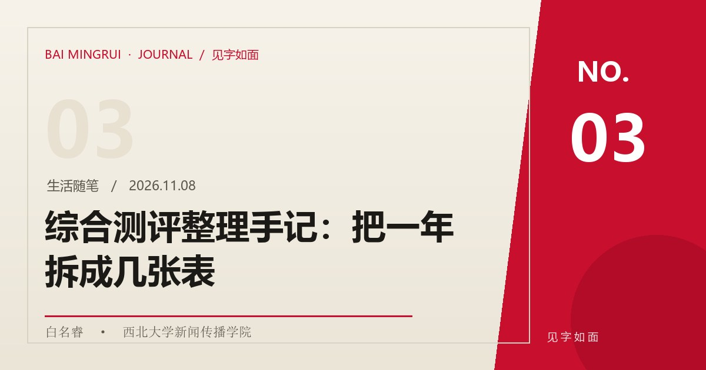

NO. 03 · 生活随笔
综合测评整理手记：把一年拆成几张表
把一整年的活动、证书和值班记录摊开，再一格一格填进表里，比想象中更像一次复盘。

这周在整理本学年的综合测评材料。一开始觉得就是填表，真开始做才发现，难点根本不在算分，而在「这一年到底做过什么」得先想清楚。
先分类，再补材料
我按模块把材料摊成几堆：创新能力放比赛和作品，社会责任放志愿服务与实践，组织管理放院团委组织部的任职与日常会务，个人特长放朗诵、诵读、摄影这些，剩下的归到个性化-其他。每一类先算小计，再按规则折算，最后才汇总。
整理下来能用的活动比预想中多：丝路朗诵、中华经典诵读、广播之声、大广赛两组作品、三下乡、推普周志愿、歌会志愿、研讨会会务、习语薪悟、摄影活动、校舞赛决赛……平时一件一件做完不觉得，列成清单才看得出一年是怎么过去的。
「整理材料不是给过去打分，是给过去编目。」
两个让我少返工的习惯
- 每类把小计放在标题首位。看表的人第一眼就能拿到总分，不用自己再算一遍；
- 证明图片直接内嵌在对应条目后面。不另开附录，翻到哪条就能核到哪条。
还有一个现实问题：证书和证明常常不是一次到齐的。我的做法是先把已确认的条目排好版，缺的位置留出来，等材料到了再逐批补进去，不为了等一张证明把整份表卡住。
组织部这一年
在院团委组织部任职满一年，活动会务、材料整理、评奖评优协助都做过。以前觉得这些是杂事，整理测评的时候才意识到，它们其实是最难被替代的部分——因为每一件都连着具体的人。